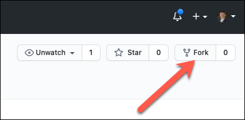
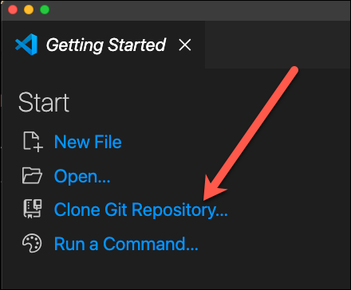
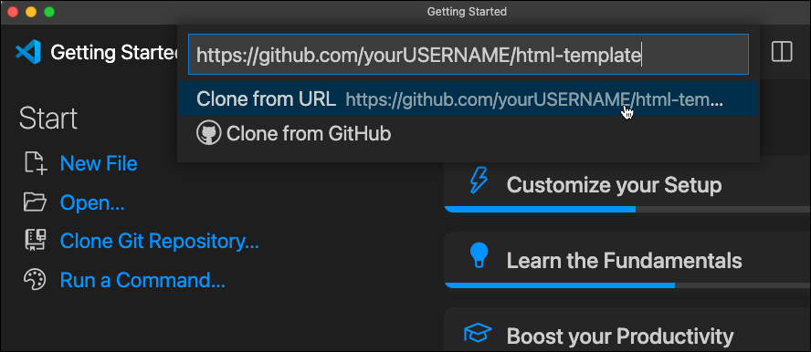
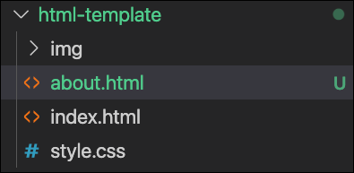
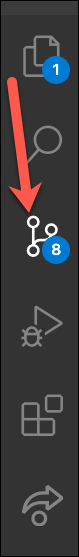
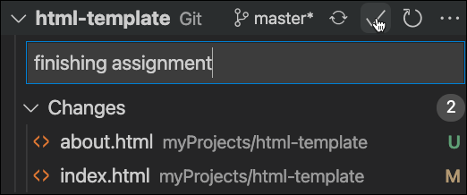
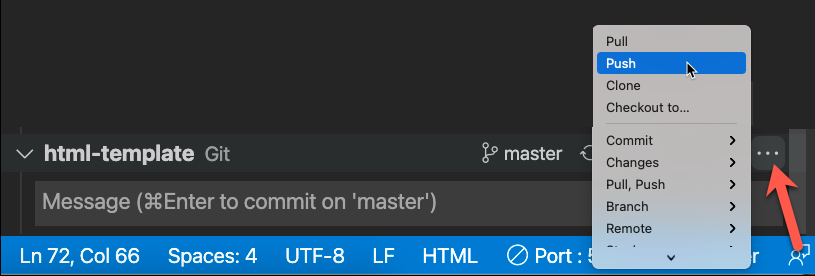

Assignment #1
Overview
Today, you will complete your first assignment for this course. You will have an opportunity to demonstrate your understanding of the concepts taught in this module, and surely you will learn a lot as you work through this first assignment. These assignments are designed to be both fun and educational, as well as give you an opportunity to stretch yourself and develop your skills.
Your tasks are as follows:
Familiarize Yourself with Someone Else's Project, and Fork it
-
Open the nathanbirch/html-template repository on github.
-
In the browser, navigate the files and commit history.
-
After learning about this repository, what could you share with someone else about it? What does it look like? What is the project supposed to do? Has a lot of effort gone in into it? How many people have collaborated on it? etc.
-
Now that you are comfortable with the structure of this project, click the
forkbutton in the top right corner of the github page.

When a project is forked, it basically copies the project and makes a new repository for you to use. If you go to your github portfolio page, or look at the list of your repositories, you should see this new html-template there as well.
Clone the Repository on to Your Computer
-
Open a new VS Code window that does not have a project open. Click
Clone Git Repository...
 -
Paste the url of your newly forked github repository and click
Clone from URL.
 -
A File Explorer window will open, select where you want this code to be stored. Ensure that it is not inside of another git repository.
-
Finally, test your code. Open index.html with Live Server and see if your new project works the way you want it to.
Add an HTML page
After investigating this code for a while, you can see that the links in the nav don't work, because there aren't any other html files for those links to take the user to. For this assignment, you will create an about.html page, and modify the link in index.html to navigate to that page.
-
Create a new file called
about.html. This should be right next to index.html in the file explorer of VS Code.
 -
Modify the
hrefattribute of the a tag in the nav of index.html. When clicked, it should go to about.html instead of #.
Commit Changes and Push to Github
-
Click on the Source Control icon in VS Code:
 -
Enter a commit message and click the check:
 -
Click the three dots, then click push:
 -
Navigate to github.com and go to your repository. Check to ensure your new commit and update code is showing up there.
Stretch Challenges
-
Copy the nav code from index.html and include it in about.html. Find where you have to change a css class to make the about.html show as active.
-
Ensure that you can get back to index.html from about.html (without using the back button).
-
Add the Services Page. Copy the nav and make it look good as well.
-
Add the Team Page. Copy the nav and make it look good as well.
-
Add the Connect Page. Copy the nav and make it look good as well.
-
Add a collaborator to your github project. Have them add some code and push it to github. Then you try pulling their code from github to your computer. If you have any errors, Google the error.
Submit Assignment
-
Fill out This Form to submit your assignment. You will need your github repository url (ie: https://github.com/yourUserName/html-template) to complete this form.